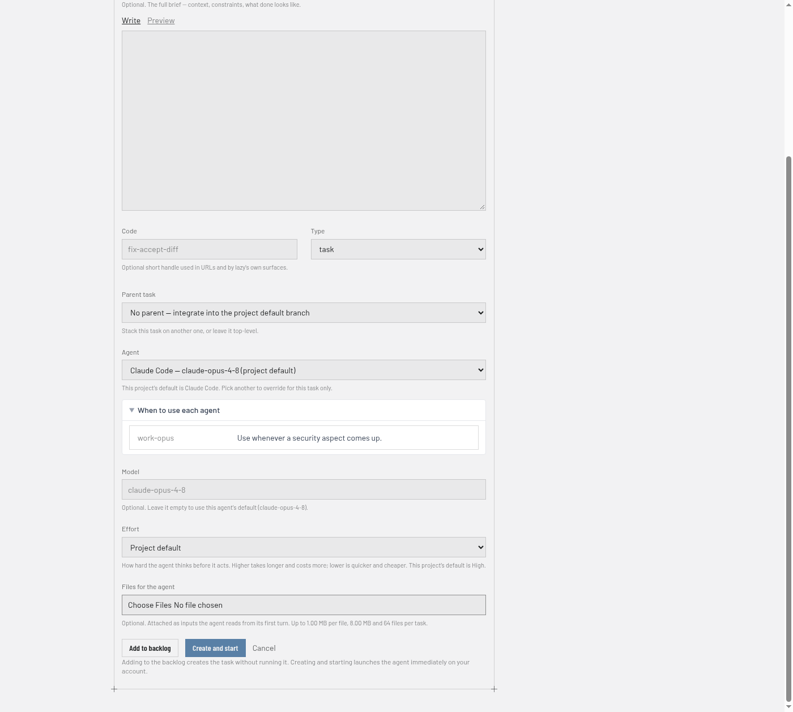
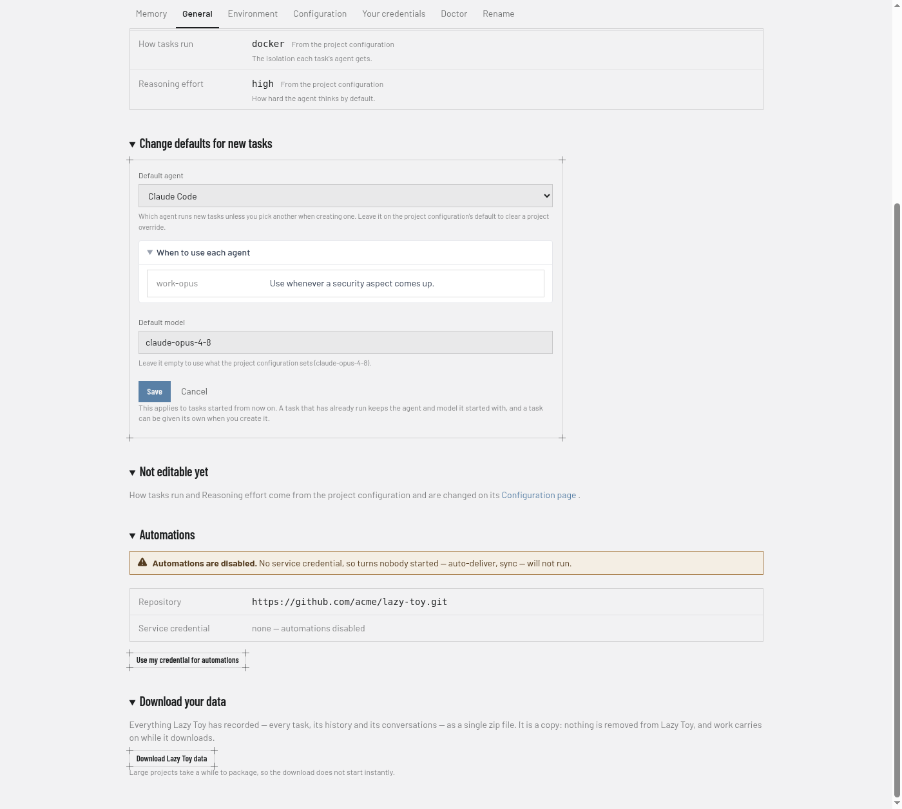

Agents in Lazy Teams
This page is for Lazy Teams members and admins choosing which coding agent runs a task and connecting the credentials those agents use. Lazy ships Claude Code, Codex, Cursor and Pi, and a project can define more of its own. Each agent bills turns to a different account, so the product keeps agent choice and credentials explicit.
Choosing an agent for a task
When you create a task, the Agent field lets you pick which agent runs it. The form preselects your project's default (see below). Pick another agent to override for that task only.

When an agent's configuration says when to use it (its description), a
When to use each agent list opens beneath the field — for example "use this
one whenever a security aspect comes up". It is guidance for your choice; the
form never switches agent on its own. Project settings show the same list
beside Default agent.
The agents your project offers
The list is your project's own. A project can name its own agents in its lazy.toml — a named combination of which agent software drives the work and which model it asks for — and those are offered first, above the ones lazy ships with. Each one says what it runs beside its name, so two agents built on the same software but pointed at different models are told apart without opening a config file.
You choose an agent by name and nothing else: where its traffic goes and which key pays for it are set where the project is configured, and are never part of filling in a task form.
If a project's agents cannot be read just now, the form falls back to the ones lazy ships with rather than guessing.
You can change a task's agent with Edit after work has started, as long as the task is not finished or closed and no turn is running (wait for it to stop or block, or stop it first). The change applies to later turns and persists on the task. If the new agent runs a different harness, the next turn starts a fresh agent conversation, because one harness's conversation cannot be resumed by another; between two agents on the same harness the conversation continues. Unless you set a model and effort in the same edit, they are re-picked for the new agent.
Long prompts
Every agent receives a turn's instructions on standard input, not as a command-line argument, so a task with a long history, many comments or long feedback is delivered whole — nothing is shortened or replaced with a pointer. You do not have to shorten feedback because a task has a long history.
Project default agent
Team admins set the default under Settings → General on a project page. The control shows what the repository's lazy.toml specifies and what this Lazy Teams install overrides, so you always see both values and which one wins.

Clearing the override returns new tasks to the repository default. Changing the default affects tasks that have not started yet; a task already running keeps the agent it began with.
Model and reasoning effort
Beside the agent, the new-task form takes a Model and an Effort — how hard the agent thinks before it acts. Leave either blank and the project's own default decides.
What you pick is kept on the task, not just on the run you are about to start. A task added to the backlog with Very high effort still runs at very high effort when somebody starts it days later from its own page.
Agent credentials
Every turn runs on the account of the person who starts it — never a teammate's, and never one key the project shares. Connect your credential once per endpoint; every agent profile using that endpoint uses the same connection. Separate named endpoints can use different accounts, even on the same provider.
Where endpoints and profiles come from
A project's owner defines its endpoints and agent profiles — under Settings →
Configuration → Endpoints and agent profiles, a page every member can open
that also lists what is waiting for a project admin to confirm, with a form for each endpoint (name,
URL, credential name) and each profile (harness, model, description, an endpoint
or a list of tiers). The form writes the project's lazy.toml; the same checks
as the raw editor apply, and nothing is saved while lazy rejects it. Members
then connect their own key for each endpoint on Your credentials.
For example, an admin can add this on Settings → Configuration → Endpoints and agent profiles to offer a Pi agent backed by a model server that does not support reasoning effort:
[endpoints.fast-model]
url = "https://api.openai.com"
credential = "openai"
[agents.fast-pi]
harness = "pi"
model = "gpt-4o"
named_endpoint = "fast-model"
reasoning = false
description = "Use for quick code changes"
Each member connects their own credential for fast-model; the task picker
then offers fast-pi. The reasoning = false setting prevents Pi from
sending an effort option to a model that does not accept one.
Your Claude credential
Open Agent credentials from your account menu (top right) and connect your
own Anthropic account — subscription token or API key. Lazy Teams stores it
encrypted and never shows it again. This connects the built-in Anthropic endpoint
(builtin:anthropic). An agent using a separately named Anthropic endpoint needs
its own connection; it does not borrow the built-in account. Use Test credential
for the built-in Anthropic connection to check each ready project's saved copy
before running work. Results appear per project; an unreachable project means
the test could not run, not that your credential is invalid. Named endpoints and
other providers do not use this test. Projects still waiting for their normal
upgrade cannot run credential tests; the page explains that no test was sent.
If a project has not received your saved connection yet, the test sends it again
and re-checks, and says why when it still cannot be delivered. Saved connections
a project is missing are also re-sent automatically every few minutes, and the
page tells you when a connection you saved for another team or project does not
reach the one you are looking at.
Account, team and project credentials
Each endpoint credential can be set at three levels, and the most specific one you set wins:
- Account (Agent credentials in your account menu) — used on every project of yours.
- Team (the team page → Your credentials) — overrides your account credential on that team's projects.
- Project (the project's Settings → Your credentials) — overrides both on that one project. You never need one; it is there if a project really needs a different key.
Each page says which level currently applies ("Using your team credential"). Copy to team on a project credential and Copy to account on a team credential copy it up a level on the server — the value is never shown, and you are asked before an existing credential at that level is replaced. Only your own credentials are ever read or copied.
A connection carries the origin shown when you set it: the URL's scheme, host and port. A project using the same endpoint name at a different origin cannot use it. A stale project or team override refuses work rather than silently spending a broader account; reconnect it or remove the override to inherit.
Endpoints a project uses
On the project's Settings → Your credentials tab: Pi, Codex (on an OpenAI API key, or on a ChatGPT subscription), Cursor, and any agent the project defines with an endpoint of its own — for example a second Claude agent pointed at a gateway. The tab lists each endpoint once, shows the agent profiles and tiers using it, and explains:
- what it needs — an API key, or for a ChatGPT subscription the contents of
~/.codex/auth.jsonaftercodex login(use a login made for this: lazy keeps it renewed, which signs out any other copy); - where your credential is sent — the endpoint's origin;
- whether your connection is available, needs reconnecting, or no credential is needed (a model server that takes none).
A credential is sent only to the origin you connected it for. Changing a base path on that origin does not require reconnecting; changing the scheme, host or port does. Anthropic credentials are never sent to a non-Anthropic destination.
Profiles that name an endpoint share its connection. A profile with its own inline
endpoint has the identity profile:<name>; renaming that profile creates a new
identity and does not move the old connection. Use a named endpoint when sharing
one connection across profiles is intentional. Built-in endpoints use
builtin:<provider> identities.
Starting a task or builder without a required connection is refused before anything runs, naming the missing endpoint. Leaving a team removes the credentials you set for that team and its projects; your account credentials stay yours.
Tiered agents and builders
A tiered profile can switch endpoints during a turn as its usage thresholds are reached. Connect every paid endpoint in the chain before starting it, including tiers you do not expect to use. Each request spends your connection for the tier actually selected; credential-free tiers send no authentication.
For example, put this in the project's Settings → Configuration (the
project's lazy.toml):
[agents.claude-normal]
harness = "claude-code"
tiers = [
{ endpoint = "anthropic-subscription", model = "claude-sonnet-5-5", threshold_percent = 80 },
{ endpoint = "lunaroute", model = "glm-5.3-flash" },
]
[endpoints.anthropic-subscription]
url = "https://api.anthropic.com"
credential = "anthropic"
[endpoints.lunaroute]
url = "https://gw.lunaroute.com/"
credential = "lunaroute-api-key"
Requests go to the subscription tier until it reaches 80% of its usage window,
or until the provider refuses a request (HTTP 429); then they go to the next
tier, even in the middle of a turn. threshold_percent applies only to a
Claude or ChatGPT subscription tier. Each tier's credential names a stored
credential, not the endpoint itself, and every member connects both endpoints
in Teams before starting a task or builder on this agent.
Usage readings belong to your endpoint connection, so profiles sharing it see the same readings. Replacing a credential clears those readings; renewing the same session preserves them. Endpoints using the same upstream account still share the provider's real quota. Providers without usage readings cannot supply a measured percentage.
Agents the project adds
The team owner adds and changes a project's agents on its Settings → Configuration
page ([agents.<name>] blocks in the project's lazy.toml). An agent added
there appears on every member's Your credentials tab and in the task form's Agent
list once the project has picked it up.
Automations
Each project can designate one member's credentials for automations (turns nobody started). Only an admin can set that, and only from their own connected account; automations run on that member's endpoint connections, including every paid tier. A missing connection disables the affected automation rather than spending another member's account. Any connected agent account will do: an admin who has connected only Codex can pay for a Codex-only project's automations.
CLI vs Teams
The lazy CLI chooses agents with agent_id in lazy.toml and --agent on
lazy create / lazy start. A project default agent set in Lazy Teams
(or via the daemon's project settings) applies when you omit --agent on
lazy create and on MCP task creation too — the same overlay, not a separate
Teams-only default.
Temporary model errors
When a model provider is overloaded or a network request fails temporarily, Lazy retries after 5, 10, 20, 40 and 60 seconds. Teams and the task's status show the attempt, the next retry time and the recovery deadline. Once the agent resumes producing model output or using tools, normal work continues.
After six failed attempts or five minutes without recovery, the turn ends with the temporary error recorded. A retry that produces no model activity is stopped after at most 60 seconds; process cleanup can take a few seconds more. The task can then resume through normal automatic recovery or human feedback.